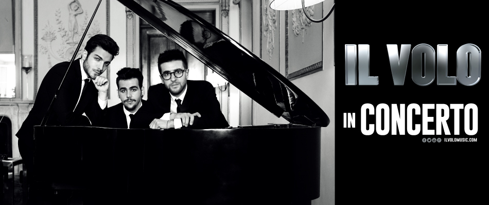
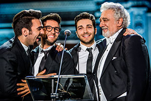

Concert コンサート情報＞IL VOLO イル・ヴォーロ
|  |
2017年11月、初来日を果たし、若さのパワーと圧巻の歌唱力で日本の 音楽ファンを熱狂させたイル・ヴォーロ。 ３人とも生粋のイタリア人で、子どもの時に三大テノールに憧れて歌手を めざし、2009年イタリアの人気オーディション番組出演をきっかけにグ ループを結成。2011年には全米ビルボードのクラシックアルバム及びラ テンポップアルバム部門で第1位を獲得。2012年にはバーブラ・ストライ サンドのツアーに参加。2015年にリリースされたアルバム「グランデ・ア モーレ」は世界各国で大ヒットし、同名シングルのミュージックビデオ再 生回数が1億回を突破！オペラからポップスまでイタリアの音楽を世界 に広めつつ、世界規模で大旋風を巻き起こしています。 イル・ヴォーロの魅力は、ひとりひとりがソロでも通用する稀有な歌声と、 それらが重なったときに生み出される魅惑のハーモニーにあります。三 人三様のチャーミングで個性的なキャラクターや、若さに似合わぬ巧さ といたずらっこな素顔のギャップや、ジャンルを超えて突き進む歌への
パッションとフリーダムな姿勢も彼らの大きな魅力です。 オリンピック選手をも虜にする圧倒的な歌唱力！
| 2009年 |
3人（当時14～15歳）はイタリアのテレビ局RAIの人気オーディション番組『Ti Lascio Una Canzone（Leavin’ You a Song）』でそれぞれソロ歌手として出演、イタリア音楽界の大御所トニー・レニスの目にとまり、グラミー賞受賞ヒットメーカー、ウンベルト・ガティカ（マイケル・ジャクソン、セリーヌ・ディオンなどを手掛ける）と1stアルバムのレコーディングが決定する。
トニーはこう語る。
「最初フェイクだと思ったよ。まさか3人の子供、14歳と15歳がまるで45歳のテノール歌手のように歌うとは！」 |
| 2010年 |
1stアルバムをリリース。本国で大ヒット |
| 2011年 |
米国ビルボートトップ200に10位で初登場、最高６位（クラシックチャート1位）で大ヒット |
| 2013年 |
世界で最も美しい教会の一つと言われるイタリア・アッシジの聖フランチェスコ聖堂で讃美歌やクリスマス・キャロルを歌ったコンサートの模様は収録され、12月25日、法王によるミサの後に放映された。 |
| 2014年 |
ラテン・グラミー賞でベスト・アーティスト賞とベスト・ポップ・アルバム賞の2つに常にノミネートされ、ベスト新人アーティスト賞とラテン・ポップ・アルバム賞の2部門受賞。
（ラテン・グラミー賞は全世界およそ80カ国に放送されており、過去の受賞者には、サンタナ、リッキー・マーティン、クリスティーナ・アギレラ、ウィル・アイ・アム、シャキーラ等、日本でも広く知られているアーティストが名を連ねている。 |
| 2015年 |
2月イタリア最大の音楽の祭典
“サンレモ音楽祭”で優勝。
（イタリア・リグーリア州のサンレモで1951年より毎年開催されているポピュラー音楽の音楽祭。ジリオラ・チンクェッティ、ボビー・ソロ、ウィルマ・ゴイクなどのスターを輩出。）
ミュージック・ビデオ再生回数4,200万回、Vevo史上最も再生回数多いイタリア楽曲。
（VEVO（ヴィーヴォ）はミュージック・ビデオおよびエンターテインメントの動画配信サイト。無料配信されるミュージック・ビデオは米 ソニー／ユニバーサル／ＥＭＩ レーベルです。マイケル・ジャクソン、U２などの大物アーティストの動画もある）
|
| 2016年 |
ヨーロッパ、ラテン・アメリカでのワールドツアーはどれもソールドアウト！
（ヨーロッパ21公演、アメリカ、ラテン・アメリカ33公演 計54公演 約20万人動員）
ニューヨーク： バークレイセンター
（cap18,000ポールマッカートニー、QUEEN、ブルノーマースなども公演を行う野外劇場）
ワシントンDC： ジョン・F・ケネディ・センター
ロサンゼルス： ドルビー・シアター（アカデミー賞の授賞式行われる場所）
イタリア・フィレンツェのサンタ・クローチェ広場で3大テノールのドミンゴと共演し、約３万人のオーディエンスが集結 |
| 2017年 |
ヨーロッパー、アメリカ、ラテン・アメリカツアーでは45都市57公演を行う予定 （約25万人動員）
ヴェローナ2公演： アレーナ・ディ・ヴェローナ（cap20,000）
ローマ2公演： パラロットマティカ
（cap11,000イタリアのポップス界の大御所として高い人気を誇るジャンナ・ナンニーニもそこでは1公演）
ロンドン： ロイヤル・アルバート・ホール（cap7,000 エリック・クラプトンも公演を行う人気劇場）
羽生結弦が2016年～17年 シーズンエキシビジョンで「NOTTE STELLATA (THE SWAN)」を使用。
タチアナ・タラソワ氏から「ユヅルにぜひ使ってほしい曲がある」と言われてプレゼントされた曲。
プルシェンコは2016年NHK杯スペシャルエキシビジョンで「グランデ アモーレ」を使用。 |
| 2018年 |
5月にキューバ出身のレゲトンミュージックで有名なグループ”Gente de Zona”とコラボした配信シングル 「Noche Sin Día」をリリース。
|
| 2019年 |
日本に再来日。東京・横浜・大阪で6公演を予定。
|
「この魅惑の夜、星空の下でピエロ、イニャツィオ、ジャンルカと共に過ごし
彼らを指揮することができるのはとても幸せだ。
フィレンツェのような美しい街で！
多くの人々がクラシック音楽を聴くようになったきっかけは、
ルチアーノ、ホセ
そして私が歌った『三大テノール』コンサートだった。
この３人の青年たちは、私たちの思いを継いでくれている。 」
—プラシド・ドミンゴ
（2016年イタリア・フィレンツェのサンタ・クローチェ広場で共演したコンサートにて） |
 |
予定曲目
「GRANDE AMORE 」(プルシェンコ使用曲)「NOTTE STELLA(THE SWAN)」(羽生結弦使用曲)「オー・ソレ・ミオ」「星は光りぬ」
「グラナダ」
「アヴェ・マリア」「Nessun Dorma～誰も寝てはならぬ～」（歌劇『トゥーランドット』より）
ほか |